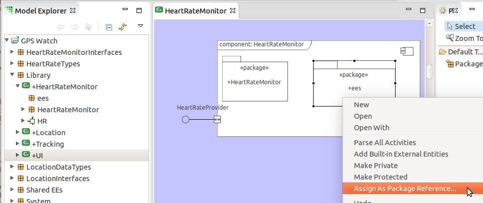
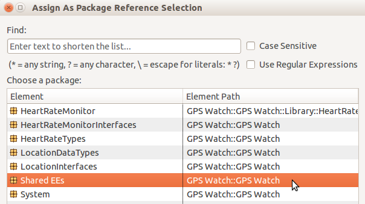
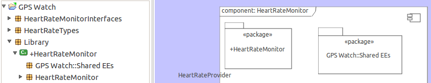

To formalize the use of shared class models, support for package references is
being added to BridgePoint.
Prior to BridgePoint 5.8 classes must be defined within a component to be useful
throughout the entire tool chain. However, it is possible to define classes
(and functions) outside a component, and elements defined within a component
will have visibility to these externally defined elements so long as they
reside within the same project.
While the parser recognizes this visibility and parses actions referring to
externally defined elements, the remainder of the tool chain does not fully
support such elements. Even though these capabilities have been in place for
several years (as a step toward shared classes), without the ability to execute
and compile models, they have not been widely used.
Package References allow the modeler to explicitly give local visibility to
elements that exist inside another package.
Unlike Component References, Package References do not have their own graphical
tool in the Palette.
To create a Package Reference:
Select the Package tool in the Palette and add a package inside a Component
Right-click on the package to open the context-menu and select Assign As Package Reference...

Choose the target package to refer to

The displayed name of the package will change to show the path to the referred-to package

Notes:
- Packages must be empty in order to make them a Package Reference
- Only Packages directly under a Component may be Package References
- Once a Package is assigned as a Package Reference, elements may not be added to it
Closely associated with Package References is the concept of "component
opacity". By this we mean: does the boundary of a component create a wall that
keeps elements inside the component from seeing elements outside the component?
When components are opaque, the modelers must use package references to import
elements and functionality from other packages into the component. BridgePoint
has a preference that determines whether components are considered to be opaque
or not. The default for this preference (opaque components = false) allows for
backwards compatibility with existing models. It is likely this setting will
change in the future as stricter use of Package References becomes more common.
The setting is found in the file <install dir>/BridgePoint/eclipse/plugins/org.xtuml.bp.pkg_<version>/plugin_customization.ini:
org.xtuml.bp.core/bridgepoint_prefs_opaque_components=falsePackage References are implemented in the xtUML metamodel with a new
reflexive-associative relationship R1402 and class Package Reference [EP_PKGREF].
BridgePoint model compilers are updated to handle this relationship and traverse
to the referred-to package if a package is found that has an associated Package
Reference across R1402.
Custom-developed model compilers must be updated to handle this relationship
as well.